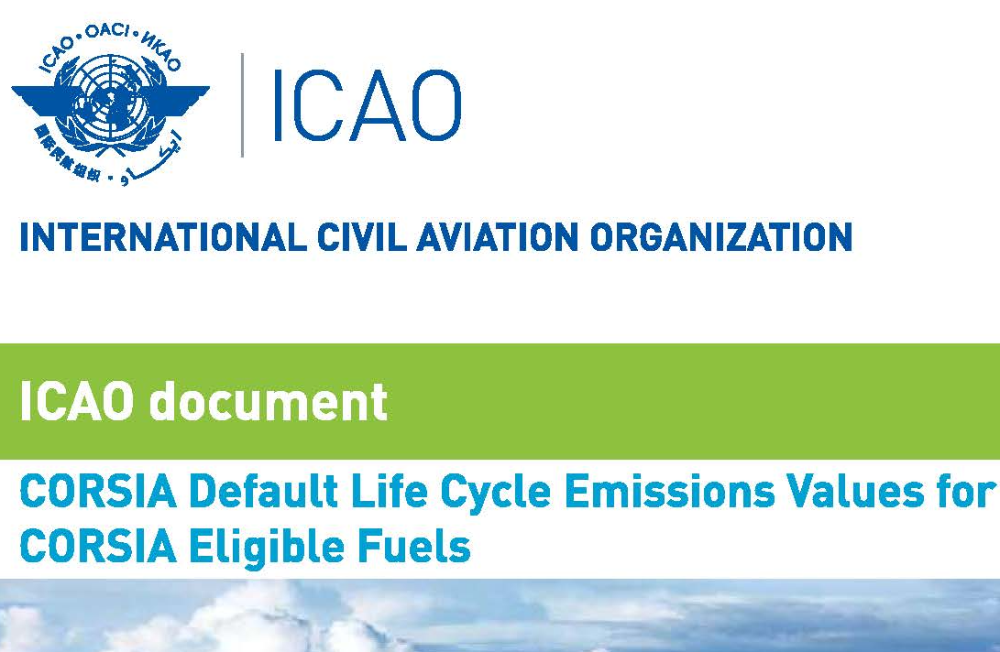
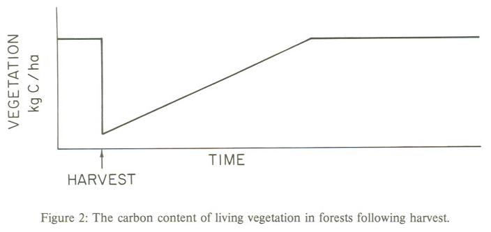
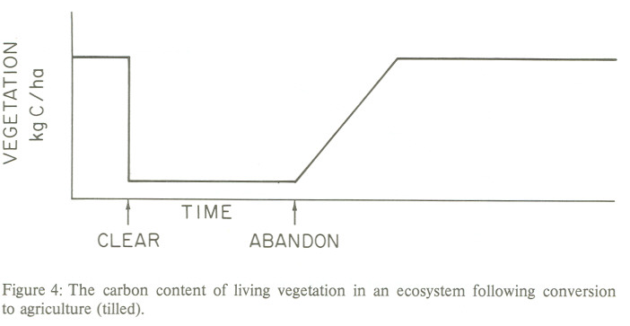

TL;DR: Indirect Land Use Change (iLUC) is a complex and controversial concept used to estimate the carbon emissions associated with biofuel production. By expanding the calculation beyond direct emissions to include hypothetical land-use changes, iLUC introduces significant uncertainty and questionable conclusions. Despite its widespread use, the scientific basis for iLUC is weak, relying on complex models with questionable assumptions and a history of overestimating the carbon impact of land-use changes. The resulting calculations often produce nonsensical results, such as different emissions values for the same crop based solely on geographic location. Ultimately, the iLUC framework appears to be more of a political tool than a scientifically sound method for assessing the environmental impact of biofuels.
Branching from the previous thread, I’d like to turn the discussion towards Eye Luck (iLUC), an abbreviation for Indirect (or Induced) Land Use Change. This conceptual formulation has successfully complexified the impact on emissions attributed to biofuels, so it no longer makes sense to anyone.
The iLUC story follows the carbon accounting story of the past three issues in many ways. It expands a conceptually simple calculation beyond the well-understood unit operations inside a given process and extends it through noisy, complex models that cannot be easily tested. This complexification leads to all kinds of senseless activity and questionable conclusions.
When considering “land use”, the key industry is agriculture. The direct (Scope 1) emissions for agriculture are pretty easy to measure: Fuel used by farm equipment, emissions from fertilizer, etc. The portion of these emissions from land use change naturally depends on what the land was used for before. If it was already farmland, then a change in tilling practice is probably the primary factor, followed by the specifics of the crop. But the operative word is “change”. If what the land is used for or how it is used doesn’t change from year to year, then land use change must equal zero, along with any emissions attributed to it.
iLUC tries to account for indirect land use changes resulting from repurposing land from agriculture to biofuel. The calculation goes beyond the immediate (“direct”) land use changes I describe above. The argument is this: If we must grow our fuel in addition to our food, then additional agricultural land must somehow be created from natural grassland or forest. This shift in land use could add carbon indirectly to the atmosphere.
How is this measured? I think the correct answer is “politically.” As one acute example, modern aviation is difficult to decarbonize, so the International Civil Aviation Organization (ICAO) has developed a table of emissions values as part of the Carbon Offsetting and Reduction Scheme for International Aviation (CORSIA).

This document includes many tables of iLUC values for sustainable aviation fuels (SAF) produced by different conversion technologies. Amazingly, many crops have different iLUC scores depending on geography. For example, switchgrass, as a biological carbon source for jet fuel based on a Fischer-Tropsch conversion process, has an iLUC value of -3.8 gCO2e/MJ if the crop is grown in the US, while outside the US, the value is +5.3 gCO2e/MJ. This difference creates a nearly two-fold difference in carbon emissions depending on where the crop is grown! This makes zero sense scientifically. Since the land use change is indirect , regardless of where the feedstock is grown, some other land source, regardless of jurisdiction, is fair game. The values should be equal or measured individually on a case-by-case basis (if it were possible).
Wikipedia traces modern iLUC to a 2008 paper published in Science 1 . The lead author of this publication, Timothy Searchinger, is not a scientist. He is an environmental lawyer and policy wonk. Unsurprisingly, the paper reads more like a legal brief and less like a logic- and data-driven report of facts. It has been broadly criticized by career modelers like Dr. Michael Wang of Argonne National Labs and well-known venture capitalists like Vinod Khosla 2 . The scientific gravitas for this paper is provided by Prof. Richard A. Houghton, a well-regarded ecologist who spent his career calculating the consequences of land use change. However, most of the references are to his own publications, which is the perfect situation for a data-light echo chamber.
Prof. Houghton was also responsible for the 1984 “missing sink” review I covered a while ago 3 . The key figure:

In 1984, Prof. Houghton claimed that changes in the biosphere account for a third of all carbon emissions , in sharp contrast with geochemists, who asserted that the biosphere is actually a small sink for carbon. To make the numbers jive, Houghton invoked a fudge factor, a “missing sink” for the emitted carbon. As I’ve covered previously, the “controversy” has been resolved in the natural course of scientific progress. The IPCC favors the geochemist’s view. In modern climate models, the contribution to emissions from land use change is minimal, within a spitting distance of zero.
But where did the problem come from, and how should policymakers adjust their thinking? I traced Houghton’s modeling back to its origin, including a 1983 Science paper 4 that invokes a model that leads to the conclusion of a massive release of carbon. This paper, in turn, refers back to a 1981 book called Carbon Cycle Modelling 5 , the proceedings of a 1979 academic meeting in La Jolla, California. In this book, the basis for the model is explained with several primitive modeling diagrams, like these:


In the abstract of this chapter, the authors state the modeler’s premise:
Carbon is released to the atmosphere as harvested wood and soil organic matter are oxidized following either of two major disturbances: the harvest of forests or the transformation of natural systems to agriculture.
Ah. So, the ecosystem model assumes that harvested vegetation is burned to completion or decays by oxidation. From a modeling perspective, at the point labeled “harvest,” all ecosystem carbon is presumed to be released into the atmosphere. Alternatively, if an ecosystem is converted to agriculture, carbon is permanently reduced until agriculture is abandoned, probably because most agriculture favors annual crops.
There’s no accounting for the obvious: Harvesting removes carbon from land, so what we do with the harvest matters a lot more than the change in land use .
But now we have potentially testable assumptions that underpin iLUC.
-
Given the increase of biofuels in our fuel mix in the past few decades, are there measurable changes in land use that support the one-for-one substitution assumed by iLUC?
-
While the amount of carbon in a given land area (as seen in the figure above) naturally decreases with harvest, is an undisturbed ecosystem really at a steady state?
Like all models, we know that ecosystem models are wrong, so that’s not the point of the exercise. The question is, are these ecosystem models practically useless because they are based on such wrong-headed assumptions buried beneath layers of complexity?
Thank you for reading Healing the Earth with Technology. This post is public, so feel free to share it.
Vinod Khosla, Biofuels: Clarifying Assumptions. Science 322 , 371-374 (2008). DOI: 10.1126/science.322.5900.371b
G. M. Woodwell et al. , Global Deforestation: Contribution to Atmospheric Carbon Dioxide. Science 222 , 1081-1086 (1983).DOI: 10.1126/science.222.4628.1081
Carbon Cycle Modelling, Bert Bolin (ed.), by the Scientific Committee on Problems of the Environment (SCOPE) of the International Council of Scientific Unions (ICSU) in collaboration with the United Nations Environment Programme. scope.dge.carnegiescience.edu